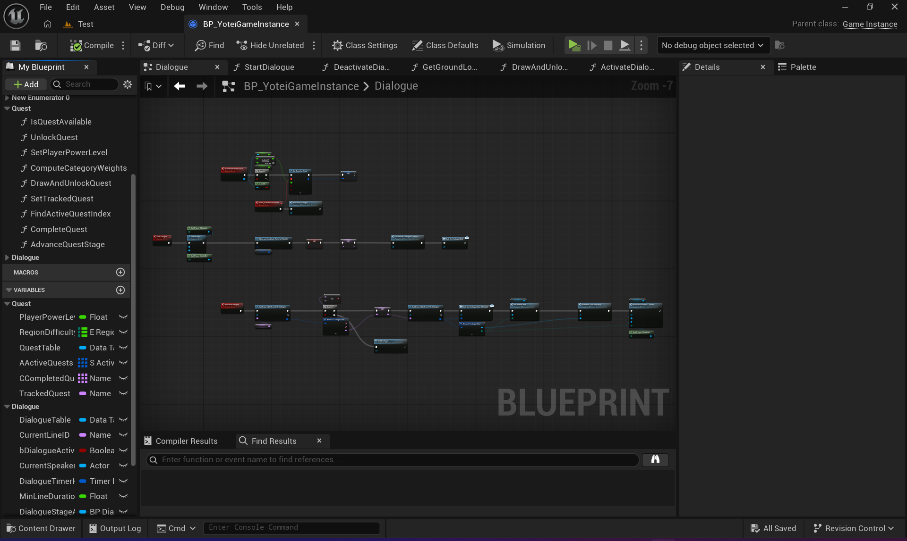
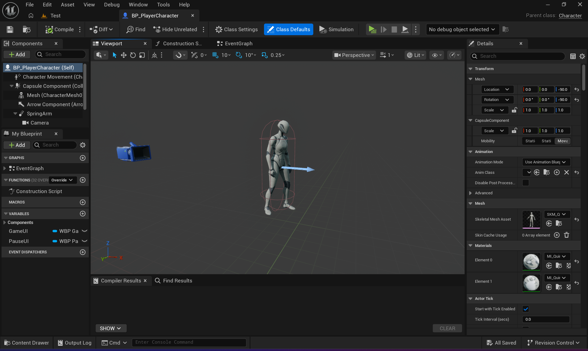
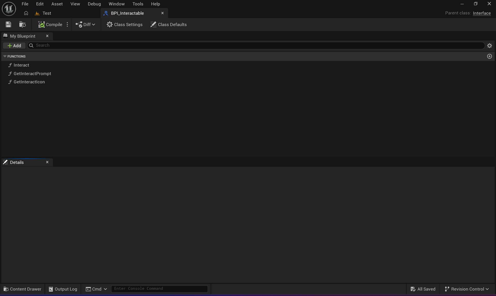
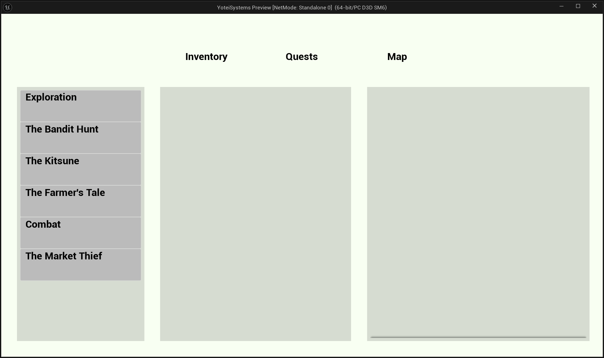
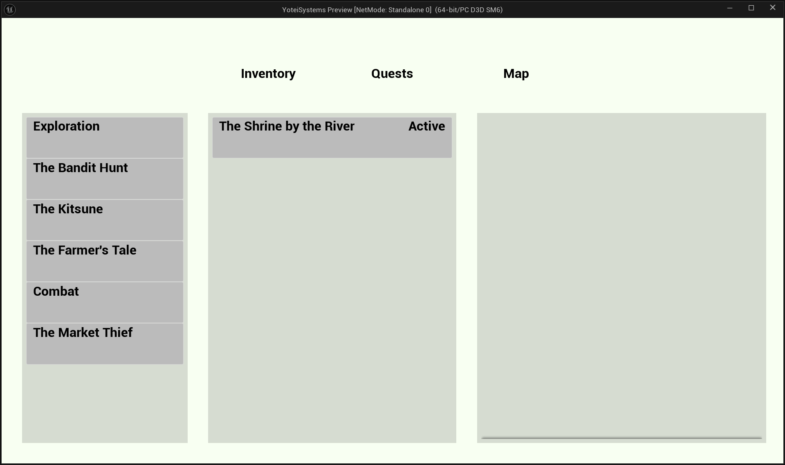
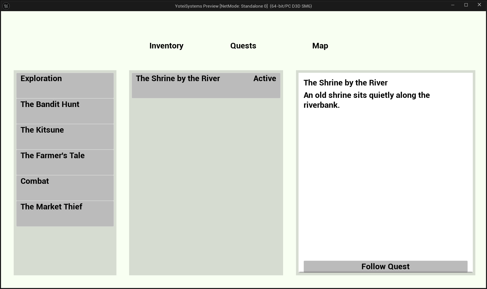
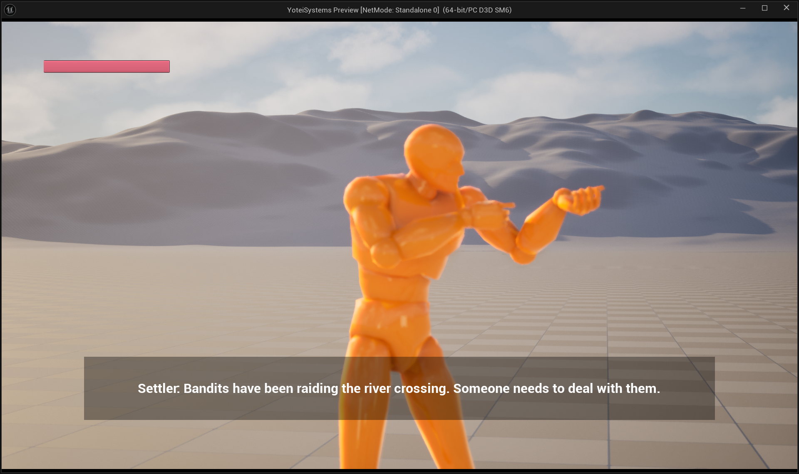

A third-person open-world action game built in Unreal Engine 5, inspired by Ghost of Tsushima / Yōtei. Blueprint-only, studio-pattern systems - designed as both a portfolio piece and a public tutorial series.
Unreal Engine 5.7In Progress
Overview
Unreal Engine 5.7In Development
A third-person open-world action game in UE5, inspired by Ghost of Tsushima / Ghost of Yōtei. All systems are Blueprint-only to keep the accompanying tutorial series accessible, while still following real production patterns used in shipped titles.
Project overview - replace with a screenshot of the current in-editor state
System Status
Character Movement
✓ Done
Health System
✓ Done
Interaction System
✓ Done
Quest Director
✓ Done
Quest UI
✓ Done
Dialogue System
✓ Done
Combat
- Planned
Enemy AI
- Planned
Ally Recruitment
- Planned
Devlog Video
▶Devlog video - paste your YouTube embed ID here
Project devlog - overall progress, architecture decisions, and lessons learned
Bound to dispatchers in Event Construct, never Tick
Architectural Principles
No polling. Every widget and system subscribes to an Event Dispatcher and only updates when something actually changes. Nothing reads state in Tick.
One source of truth. BP_YoteiGameInstance is the only place runtime state (active quests, completed quests, tracked quest) ever lives. Nothing caches a copy.
Data in tables, not assets. All quest and dialogue content lives in JSON-imported Data Tables. Adding a quest is adding a row - not creating a new Blueprint asset.
Additive, not ripping. Every system is designed so v2 features are additive - new nodes, new fields, new functions - nothing rewires what already works.
Foundation
Unreal Engine 5.7Done
The bootstrapping layer every other system depends on. UE5 requires an explicit chain that Unity handles implicitly - this is the piece with no Unity equivalent.
Bootstrap chain: BP_YoteiGameMode → sets Default Pawn Class = BP_PlayerCharacter and Player Controller Class = BP_PlayerController. Assigned in Level World Settings. Without this, nothing spawns and no input binds.

BP_YoteiGameMode - Class Defaults with Pawn and Controller assigned

BP_PlayerCharacter spawned in L_Foundation
Enhanced Input Setup
All input goes through Enhanced Input. Legacy Input.GetAxis is not available in UE5.7.
Asset
Type
Action
IMC_Default
Input Mapping Context
Container - added in BP_PlayerCharacter BeginPlay
IA_Move
Input Action (Vector2D)
WASD movement
IA_Look
Input Action (Vector2D)
Mouse / stick camera
IA_Jump
Input Action (Bool)
Spacebar
IA_Interact
Input Action (Bool)
E key - triggers InteractionComponent
IA_ToggleMenu
Input Action (Bool)
Tab - wired in BP_PlayerController (not Character)
Health System
Unreal Engine 5.7Done
BP_HealthComponent is an Actor Component attached to BP_PlayerCharacter. It owns all health state and broadcasts changes via Event Dispatchers - nothing polls it.
Variables
Variable
Type
Default
MaxHealth
Integer
100
CurrentHealth
Integer
= MaxHealth
bIsDead
Bool
false
Event Dispatchers
OnDamaged(Amount: Int, CurrentHealth: Int) - fires on every TakeDamage call that lands
OnHealed(Amount: Int, CurrentHealth: Int) - fires on every Heal call
OnDeath - fires once when CurrentHealth reaches 0; bIsDead guard blocks all subsequent calls
WBP_HealthBar - progress bar updating in real time via OnDamaged dispatcher
Why dispatchers, not direct calls: WBP_HealthBar and the debug print logger both subscribe to OnDamaged independently. Neither knows the other exists - and neither knows about BP_HealthComponent's internals. Adding a third listener (damage popups, screen effects) costs zero changes to the component itself.
Interaction System
Unreal Engine 5.7Done
A four-piece system mirroring Unity's IInteractable pattern. The component sphere-traces each tick, finds the closest interactable, and drives the prompt widget - all without the interactable knowing who's looking at it.
Blueprint
Role
BPI_Interactable
Interface - Interact, GetPromptText, GetPromptIcon. Any actor implementing this is automatically discovered.
WBP_InteractionPrompt
Icon + text overlay. ShowPrompt / HidePrompt are the only public functions - no state knowledge.
BP_InteractionComponent
Actor Component on the player. Sphere trace each tick, tracks closest interactable, calls ShowPrompt / HidePrompt on the widget.
BP_TestInteractable
Placeholder actor implementing BPI_Interactable for end-to-end testing.
Interaction prompt shown when player enters sphere trace range

BPI_Interactable - the three interface functions
Typing rule: casting down to a specific type always needs an explicit Cast node, even when you know the object implements the interface. Blueprint can't guarantee type at compile time - this explains every type-mismatch fix in this system.
Quest Director
Unreal Engine 5.7Done
A weighted, catch-up quest director inspired by Yōtei's dynamic quest surfacing. Underleveled players get Side / Exploration draws; overleveled players get pulled toward Main Quests. The draw logic never hard-returns null - it re-rolls into the next available category.
Data Structure - S_QuestData
Field
Type
Purpose
Title
Text
Display name in Quest Log
Description
Text
Journal entry text
Category
E_QuestCategory
Main / Side / Exploration / Bounty - drives weighted draw
Region
E_Region
Which region the quest belongs to
QuestLine
Name
Groups quests under a named arc in the log
Prerequisites
Array<Name>
Row names that must be completed first
NextQuest
Name
Auto-unlocks this row on completion (chain quests)
DrawAndUnlockQuest - Weighted Algorithm
Input: CurrentRegion (E_Region)
Output: DrawnQuest (BP_QuestData ref) or None
1. ComputeCategoryWeights(Region)
→ returns weight floats for Main/Side/Exploration/Bounty
→ underleveled = high Side weight; overleveled = high Main weight
2. RemainingCategories = [Main, Side, Exploration, Bounty]
3. WHILE RemainingCategories not empty:
a. Sum weights of remaining categories → TotalWeight
b. RandomRoll = Random(0, TotalWeight)
c. Walk categories, accumulate RunningSum
→ first category where RunningSum >= RandomRoll = PickedCategory
d. Pool = GetAvailableQuests(PickedCategory, Region)
e. IF Pool not empty:
→ Draw random quest from Pool
→ UnlockQuest(DrawnQuest)
→ Broadcast OnQuestUnlocked
→ RETURN DrawnQuest
f. ELSE:
→ Remove PickedCategory from RemainingCategories
→ continue loop
4. IF all categories exhausted → RETURN None
(trigger handles gracefully - idle chatter, empty board, etc.)
System Demo
Demo: DrawAndUnlockQuest running across different PlayerPowerLevel values - showing category shift
Trigger Systems
Trigger
Mechanic
Status
Interrogation
Last enemy in squad → DrawAndUnlockQuest
Planned
Camp Visitor
Weighted NPC at rest point → dialogue → draw
Planned
Settler Quest Giver
NPC in settlement → interact → dialogue → draw
Planned
Bounty Board
Board actor → interact → draw (no dialogue)
Planned
Quest UI
Unreal Engine 5.7Done
The Quest Log lives inside the Pause Menu and uses a three-box layout: questline sections (Box 1), quest entries for the selected section (Box 2), and a detail panel for the selected entry (Box 3).

WBP_QuestTab - three-box layout with section, entries, and detail panel
Widget Hierarchy
WBP_PauseMenu
└── Widget Switcher (Tab = 1: Quests)
└── WBP_QuestTab
├── Box 1 - ScrollBox of WBP_QuestSection (one per questline)
│ └── WBP_QuestSection → bubbles OnSectionClicked
├── Box 2 - ScrollBox of WBP_QuestEntry (one per quest in section)
│ └── WBP_QuestEntry → bubbles OnEntryClicked
└── Box 3 - Single WBP_QuestDetail (persistent, updated in place)
Design Rule - Discovered Only
Only discovered questlines appear in the log - matching Ghost of Tsushima / Yōtei's own Tales list. Showing "The Kitsune" before you've encountered it would spoil that the storyline exists at all. The log builds from BP_YoteiGameInstance's ActiveQuests and CompletedQuests arrays, grouped by QuestLine field.

WBP_QuestEntry - selected state with highlight

WBP_QuestDetail - stage text, description, and track button
Dialogue System
Unreal Engine 5.7Done
A Yōtei-style auto-advance system. Lines play through on a timer derived from the voice clip duration - no Continue button. The only player input available is hold-to-skip the entire conversation.
Confirmed from research: Ghost of Yōtei's dialogue is fully automated - lines play on their own, you cannot advance line-by-line, and the only available input is hold-to-skip the whole cutscene. V1 matches that exactly.

WBP_DialogueBox - subtitle overlay with auto-advance timer running
Auto-Advance Timing
Duration = MAX(GetSoundDuration(VoiceClip), MinLineDuration)
// MinLineDuration default: 2.5 s
// Guarantees silent test rows hold long enough to read
SetTimer(Duration) → fires AdvanceDialogue → reads NextLineID
// If NextLineID is empty Name → EndDialogue
// If NextLineID has a Choices array (v2) → show choice buttons instead
Two-Shot Camera
BP_DialogueCamera (a CineCameraActor subclass) is repositioned by ActivateDialogueCamera at the start of every conversation:
Demo: auto-advance dialogue running with two mannequins and the two-shot BP_DialogueCamera
Gotcha: WBP_DialogueBox must be created at level start in BeginPlay, not on first Interact. If it's created on Interact, its Bind Event won't be listening in time for that very first call - the first line silently fires and nothing shows.
All Widgets
Unreal Engine 5.7Done
Every widget is UMG-based, event-driven, and never polls in Tick. All state binds in Event Construct via Event Dispatchers.
Widget
Role
Binds To
Status
WBP_HealthBar
Screen-space progress bar
OnDamaged, OnHealed, OnDeath
✓
WBP_InteractionPrompt
Icon + text near crosshair
ShowPrompt / HidePrompt
✓
WBP_DialogueBox
Subtitle panel
OnLineChanged dispatcher
✓
WBP_PauseMenu
Tab-based pause overlay
IA_ToggleMenu via BP_PlayerController
✓
WBP_QuestTab
Quest Log inside Pause Menu
OnQuestUnlocked, OnQuestCompleted
✓
WBP_QuestSection
One questline group
Parent WBP_QuestTab
✓
WBP_QuestEntry
Single quest row
Parent WBP_QuestSection
✓
WBP_QuestDetail
Right-panel detail view
OnEntryClicked → SetQuestDetail
✓
Tab Key Fix - BP_PlayerController
The pause menu toggle was moved from BP_PlayerCharacter to BP_PlayerController. Character input is not guaranteed to keep processing once Set Game Paused is active. A PlayerController is.
Closing is handled by WBP_PauseMenu's own On Preview Key Down override - not through a Controller bool - which sidesteps the state-desync bug that caused Tab to get stuck only ever opening.
WBP_HealthBar
WBP_InteractionPrompt
WBP_PauseMenu (Tab)
Roadmap
Unreal Engine 5.7
Must-Do - Studio-Impressive
Cinematic Dialogue + voice files - first, because Camp and Settler both depend on it
Camp trigger - random NPC visitor at rest point → dialogue → quest draw